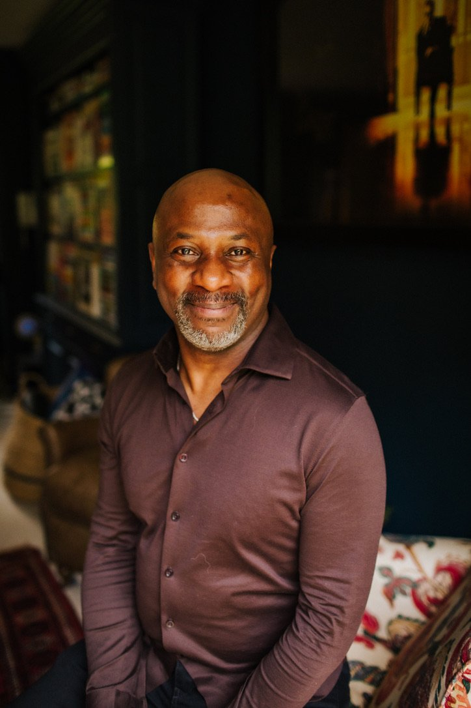

Narrative Coaching
We live inside stories.
Stories about who we are.
Who we need to be.
What other people expect from us.
What leadership looks like.
What happened before.
What is possible next.
Some of those stories give us strength and direction. Others become so familiar that we stop noticing they are stories at all.
Narrative Coaching creates space to notice the story you are living and leading from, and to explore what becomes possible when it is no longer the only story available.

Why story?
The stories we carry shape what we notice, what we expect and what we believe is possible.
We make meaning through stories.
Stories about ourselves.
Stories about other people.
Stories about what success should look like.
Stories about what leadership requires.
Stories about what we are allowed to want, say, risk or become.
Over time, some of those stories become so familiar that they begin to feel like facts. Narrative Coaching creates distance from those assumptions, not to discard everything that has come before, but to see it more clearly.
To notice what a story has made possible. To recognise where it may now be limiting you. And to make room for other ways of seeing, choosing and acting.

Story · character · identity
I was interested in story long before I became a coach.
I originally trained as an actor and worked in physical theatre. In that world, character, story, motivation, relationship, movement and presence were the work.
Actors learn to become curious about questions such as:
- Who is this person being?
- What do they want?
- What do they fear?
- What do they believe?
- What role have they learned to play?
- What changes when the story changes?
That curiosity never left me. Today it sits alongside my training in Narrative Coaching and years of working with senior leaders, teams and organisations. The context may be different, but many of the questions remain.
Questions that open things up
Sometimes a different question changes the whole conversation.
What needs to change for everything to change?
The work
The aim is not to invent a better story. It is to see more of what is already there.
Narrative Coaching can help you notice the stories and identities shaping how you respond to the situation in front of you. That might mean:
- recognising a role you have outgrown
- noticing a pattern that keeps repeating
- separating what happened from the meaning you have made of it
- seeing strengths, choices or identities that have been pushed to the edge
- questioning assumptions that once protected or helped you
- finding language for something you could feel but had not yet named
- widening the range of possibilities available to you
- deciding how you want to act from here
The work is reflective, but it is not reflection for its own sake.
What becomes possible now that you can see differently?
Consequential moments
Narrative work becomes particularly powerful when something is changing.
You've stepped into a bigger role.
Your responsibilities have changed, but some part of your identity has not caught up yet.
The old way of leading no longer fits.
A style that once served you is beginning to constrain what comes next.
You're carrying a story about what leadership requires.
Strong. Available. Certain. Indispensable. In control. Perhaps that story now needs examining.
Something keeps repeating.
The people may change. The context may change. The pattern somehow returns.
You're at a transition point.
A promotion, loss, restructure, new chapter, ending or beginning is changing how you see yourself.
You can sense there is more available.
More of you. More choice. More possibility than the current story allows.
How it works
Start with what is happening.
You do not need to arrive with the right question or a perfectly defined coaching objective. We begin with what is happening now.
The role.
The relationship.
The decision.
The pattern.
The tension.
The thing you cannot quite name.
From there, we work with whatever helps you see the situation more fully: story, identity, language, relationship, body, pattern, assumption and possibility.
The work is practical as well as reflective. The aim is not simply to understand yourself better. It is to create more choice in how you live, lead and act.
Available online internationally, with selected in-person work by arrangement.
A practice grounded in experience
Narrative is one lens within a wider coaching practice.
My work also draws on systemic thinking, team coaching, the Enneagram, embodiment and more than 5,000 hours of coaching, facilitation and leadership development.
Narrative Coaching is not something I use in isolation. It is part of how I listen, how I notice, how I ask questions, and how I work with identity, relationship, role and possibility.
Contributing author, Playfulness in Coaching: Exploring Our Untapped Potential Through Playfulness, Creativity and ImaginationStephanie Wheeler & Teresa Leyman, Routledge, 2023
What are you noticing?
You do not need to know what the new story is before we speak.
Sometimes the work begins by noticing that the old one is no longer enough.